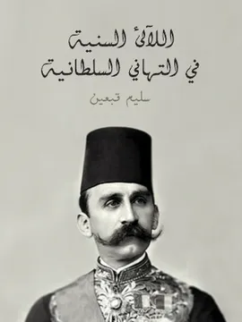

اللآلئ السنية في التهاني السلطانية

قراءة عربية أصلية محددة النطاق في الصفحات 10 إلى 11 من ملف PDF المرتبط، وليست تلخيصا كاملا للكتاب. نناقش ما تدعمه هذه المقاطع فقط.
مقدمة الناشر وسيرة الأمير حسين كامل
يذكر المؤلف أن كتابه يضم كثيرا مما لم يظهر في الصحف، وقصائد الشعراء وتاريخا، ليكون أثرا خالدا للأجيال وخزانة أدب لطلاب العلم، ويدعو بالبقاء للسلطان حسين كامل في ختام مقدمته. ثم تبدأ خلاصة تاريخية بقلم أحمد زكي باشا عن الأمير حسين كامل ثاني أنجال الخديو إسماعيل، وتذكر مولده بالقاهرة سنة ١٨٥٣ وتعلمه في المدارس المصرية ثم سفره إلى باريس ونزوله في قصر نابليون الثالث، وهي بداية سيرة لا يكتمل فيها المقروء.
زاوية وحدود القراءة
قراءة موجزة من ص ١٠ إلى ص ١١ من أصل ١٠٤ صفحة، تعرض مقدمة المؤلف وبداية سيرة الأمير حسين كامل، لا الكتاب كاملًا.
الطبعة والقراءة
هذه النسخة من الكتاب صادرة ومتاحة مجانًا من مؤسسة هنداوي بشكل قانوني؛ حيث إن نص الكتاب يقع في نطاق الملكية العامة تبعًا لقوانين الملكية الفكرية. وبحسب ملف الناشر، تصميم الكتاب والغلاف مرخصان برخصة المشاع الإبداعي: نسب المصنف 4.0.
تنزيل PDF المجاني ↓ القراءة والمصدر الرسمي ↗